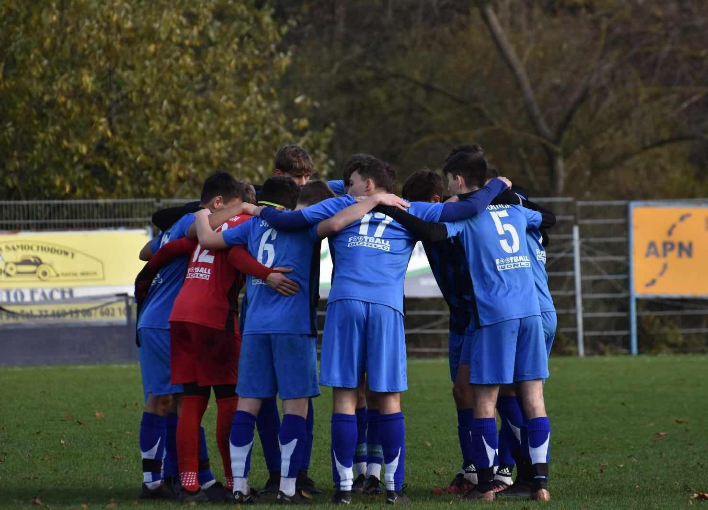
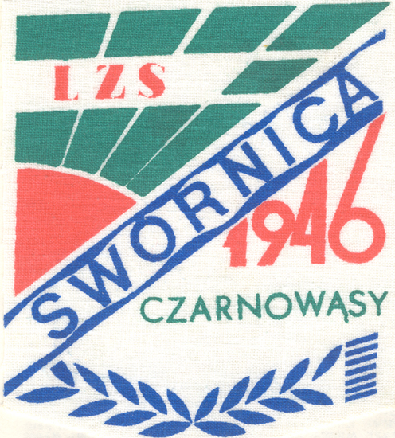
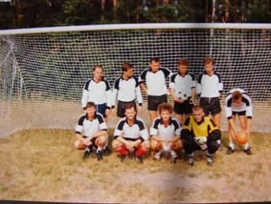

LZS Swornica Czarnowąsy
LZS Swornica Czarnowąsy
Założycielami klubu byli: Antoni Janik, Kazimierz Lachowski, Stefan Grefling, Karol Felger, Alojzy Zośka. Antoni Janik przybył do Czarnowąs 11 kwietnia 1945 roku z okolic Częstochowy by zostać pierwszym Kierownikiem placówki oświatowej i prowadził kursy repolonizacyjne, między innymi poprzez sport, w Czarnowąsach najpopularniejsza była piłka nożna.
Pierwszy mecz drużyna reprezentująca Czarnowąsy rozegrała jesienią 1945 roku w Tułowicach. Na początku marca 1946 Związek Samopomocy Chłopskiej wydał uchwałę nakazującą organizowanie sportu na wsi. 16 marca 1946 roku w/w działacze składają dokumenty i zostają oficjalnie zarejestrowani w delegaturze OZPN w Opolu jako pierwszy Ludowy Zespół Sportowy w Polsce. Później datę tę uznano jako oficjalną datę powstania Ludowych Zespołów Sportowych.
Nazwę klub przyjął od płynącej rzeczki koło ówczesnego boiska i tak powstał LZS Swornica Czarnowąsy. Później powstawały kolejne sekcje sportowe które wychowały nawet reprezentantów kraju : W piłce ręcznej Krystyna Gąska i Ruta Smyk w zespole mistrza kraju Budowlanych Opole, Irena i Stanisława Twardawska oraz Renata Preis które grały w Odrze Opole, reprezentantami piłki nożnej byli Hubert Poplutz (reprezentant piłkarskiej reprezentacji Polski B) i Joachim Krawiec jako piłkarze Odry Opole oraz Joachim Hyła z sekcji motoro-turystycznej jako późniejszy I-ligowy żużlowiec.
W 1960 w Swornicy rozpoczął swoją piłkarską karierę obecny działacz p. Jerzy Kesler w tym czasie w LZS Swornica grali Krystrian Polok, Rudolf Stotko, Zygmunt Knapik, Alwin Michala, Arnold Koszyk, Ryszard Twardawski, Franciszek Ciris
Później przyszły chudsze czasy i pomimo usilnych starań kolejnych prezesów klubu tj. Karola Felgra, Rudolfa Piechaczka, Jana Knapika klub podupadł, ograniczono klub tylko do sekcji piłkarskiej która długo rozgrywała swoje mecze na poziomie C-klasy (nieprzerwanie od 1946 roku). Nie poprawili tego kolejni prezesi : p. Mateja, Tileczek, Musiał, Olinkiewicz. W 28 maja 1989 roku Swornica awansowała do B-klasy w składzie :M. Olinkiewicz, A. Kesler (syn Jerzego), H. Henek, J. Twardowski, Komor , J. Mikołajczyk , Wąsik, A.Wnuk, G.Czech, K.Witek, Sierwuk, D.Szwej, Z. Knapik 
W sezonie 1997/98 za rządów nowego prezesa Krzysztofa Kantorskiego "Swornica" awansowała do A-klasy, a awans ten rozpoczął tłuste lata klubu w kolejnych sezonach awansując najpierw do ligi okręgowej gdzie dołączył do klubu wiceprezes Piotr Rusin. Po jego przyjściu klub zarejestrowano w sądzie jako Sportowe Stowarzyszenie Kultury Fizycznej LZS "Swornica" Czarnowąsy, oraz wybrano obecny zarząd w składzie:
 Po sześciu latach klub awansował z B-klasy do IV ligi , awans ten wywalczyli : M. Szczepaniak, M.Bazyli, T.Ciastko, D.Domański, K.Hanas, P.Jeleniewski, A.Sobocki, T.Kukuła, G.Bryłka, M.Polański, P.Stysiał, W.Wierszin, D.Szczepaniak, R.Wierdak, A.Sapa, D.Lubczyński, M.Piernikarski.
Po sześciu latach klub awansował z B-klasy do IV ligi , awans ten wywalczyli : M. Szczepaniak, M.Bazyli, T.Ciastko, D.Domański, K.Hanas, P.Jeleniewski, A.Sobocki, T.Kukuła, G.Bryłka, M.Polański, P.Stysiał, W.Wierszin, D.Szczepaniak, R.Wierdak, A.Sapa, D.Lubczyński, M.Piernikarski.
W czwartej lidze "Swornica" grała tylko jeden sezon by awansować do III ligi.
Rozgrywki w III lidze klub z Carnowąs zakończył na (przedostatnim)15 miejscu zdobywając 24 punkty i zaznał goryczy spadku w szeregi opolskich IV ligowców.
Poniżej prezentujemy zdjęcia z Walnego Zebrania Opolskiego Związku Piłki Nożnej:
Przed sezonem 2005/2006 na własne życzenie "Swornicę" opuściła rodzina Państwa Kesler wraz z synem. Na ostatnim zebraniu zarządu 27.08.05 nastąpiły duże roszady kadrowe. Aktualny zarząd klubu składa się z 7 osób:
W dniu 24.02.09 po kolejnym zebraniu ukonstytuował się nowy Zarząd Klubu:
Dnia 07.08.2012 w trakcie Zebrania Zarządu Skarbnik klubu - Krystyna Pietrek złożyła rezygnację z pełnienia swojej funkcji. W wyniku przeprowadzonych wyborów na stanowisko Skarbnika powołano Jarosława Twardowskiego.
Nowy Zarząd Klubu:
Dnia 18.03.2021r. W wyniku przeprowadzonych wyborów ukonstytuował się nowy Zarząd Klubu
Nowy Zarząd Klubu: